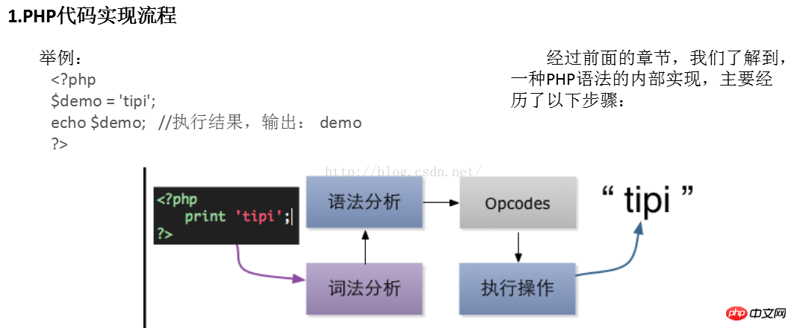

目前编程语言可以分为两大类:
第一类是像C/C++， .NET， Java之类的编译型语言， 它们的共性是: 运行之前必须对源代码进行编译，然后运行编译后的目标文件。
第二类比如:PHP， Javascript， Ruby， Python这些解释型语言， 他们都无需经过编译即可”运行”，虽然可以理解为直接运行
但它们并不是真的直接就被能被机器理解， 机器只能理解机器语言，那这些语言是怎么被执行的呢， 一般这些语言都需要一个解释器， 由解释器来执行这些源码， 实际上这些语言还是会经过编译环节， 只不过它们一般会在运行的时候实时进行编译。为了效率，并不是所有语言在每次执行的时候都会重新编译一遍， 比如PHP的各种opcode缓存扩展(如APC， xcache， eAccelerator等)，比如Python会将编译的中间文件保存成pyc/pyo文件， 避免每次运行重新进行编译所带来的性能损失。
PHP的脚本的执行也需要一个解释器， 比如命令行下的php程序，或者apache的mod_php模块等等
假设上面的代码保存在名为hello.php的文件中， 用PHP命令行程序执行这个脚本：
$ php ./hello.php这段代码的输出显然是Hello， Tipi!， 那么在执行脚本的时候PHP/Zend都做了些什么呢？

即:词法分析 => 语法分析 => opcode(中间代码)编译 =>Zend Engineer 执行
而
opcode是php语言里供zend引擎执行的一种中间代码，类似java中的字节码、或者python中的字节码对象pycodeobject.
产生命令行
php -dvld.active=1 t.php题目
“百度杯”CTF比赛 十月场 Vld
内容为是do you know Vulcan Logic Dumper?
查看源码获得index.php.txt-呜呜呜 开始做逆向了
翻译本在这https://www.php.net/manual/en/internals2.opcodes.php
Finding entry points
Branch analysis from position: 0
Jump found. Position 1 = 23, Position 2 = 38
Branch analysis from position: 23
Jump found. Position 1 = 26, Position 2 = 35
Branch analysis from position: 26
Jump found. Position 1 = 29, Position 2 = 32
Branch analysis from position: 29
Jump found. Position 1 = 34
Branch analysis from position: 34
Jump found. Position 1 = 37
Branch analysis from position: 37
Jump found. Position 1 = 40
Branch analysis from position: 40
Return found
Branch analysis from position: 32
Jump found. Position 1 = 37
Branch analysis from position: 37
Branch analysis from position: 35
Jump found. Position 1 = 40
Branch analysis from position: 40
Branch analysis from position: 38
Return found
filename: C:\ctf\index.php
function name: (null)
number of ops: 44
compiled vars: !0 = $a, !1 = $b, !2 = $c
line # * op fetch ext return operands
---------------------------------------------------------------------------------
2 0 > EXT_STMT
1 ECHO 'do+you+know+Vulcan+Logic+Dumper%3F%3Cbr%3E'
3 2 EXT_STMT
3 BEGIN_SILENCE ~0
4 FETCH_R global $1 '_GET'
5 FETCH_DIM_R $2 $1, 'flag1'
6 END_SILENCE ~0
7 ASSIGN !0, $2
4 8 EXT_STMT
9 BEGIN_SILENCE ~4
10 FETCH_R global $5 '_GET'
11 FETCH_DIM_R $6 $5, 'flag2'
12 END_SILENCE ~4
13 ASSIGN !1, $6
5 14 EXT_STMT
15 BEGIN_SILENCE ~8
16 FETCH_R global $9 '_GET'
17 FETCH_DIM_R $10 $9, 'flag3'
18 END_SILENCE ~8
19 ASSIGN !2, $10
6 20 EXT_STMT
21 IS_EQUAL ~12 !0, 'fvhjjihfcv'
22 > JMPZ ~12, ->38
7 23 > EXT_STMT
24 IS_EQUAL ~13 !1, 'gfuyiyhioyf'
25 > JMPZ ~13, ->35
8 26 > EXT_STMT
27 IS_EQUAL ~14 !2, 'yugoiiyhi'
28 > JMPZ ~14, ->32
9 29 > EXT_STMT
30 ECHO 'the+next+step+is+xxx.zip'
10 31 > JMP ->34
11 32 > EXT_STMT
33 ECHO 'false%3Cbr%3E'
13 34 > > JMP ->37
14 35 > EXT_STMT
36 ECHO 'false%3Cbr%3E'
16 37 > > JMP ->40
17 38 > EXT_STMT
39 ECHO 'false%3Cbr%3E'
19 40 > NOP
22 41 EXT_STMT
42 ECHO '%3C%21--+index.php.txt+%3F%3E%0D%0A%0D%0A'
43 > RETURN 1
branch: # 0; line: 2- 6; sop: 0; eop: 22; out1: 23; out2: 38
branch: # 23; line: 7- 7; sop: 23; eop: 25; out1: 26; out2: 35
branch: # 26; line: 8- 8; sop: 26; eop: 28; out1: 29; out2: 32
branch: # 29; line: 9- 10; sop: 29; eop: 31; out1: 34
branch: # 32; line: 11- 13; sop: 32; eop: 33; out1: 34
branch: # 34; line: 13- 13; sop: 34; eop: 34; out1: 37
branch: # 35; line: 14- 16; sop: 35; eop: 36; out1: 37
branch: # 37; line: 16- 16; sop: 37; eop: 37; out1: 40
branch: # 38; line: 17- 19; sop: 38; eop: 39; out1: 40
branch: # 40; line: 19- 22; sop: 40; eop: 43
path #1: 0, 23, 26, 29, 34, 37, 40,
path #2: 0, 23, 26, 32, 34, 37, 40,
path #3: 0, 23, 35, 37, 40,
path #4: 0, 38, 40,
do you know Vulcan Logic Dumper?<br>false<br><!-- index.php.txt ?>逆向结果
<?php
echo 'do you know Vulcan Logic Dumper?<br>';
$a=$_GET['flag1'];
$b=$_GET['flag2'];
$c=$_GET['flag3'];
if($a!='fvhjjihfcv')
{
echo 'false<br>';
}
elseif($b!='gfuyiyhioyf')
{
echo 'false<br>';
}
elseif($c!='yugoiiyhi')
{
echo 'false<br>';
}
else
{
echo 'the next step is xxx.zip';
}
echo '<!-- index.php.txt ?>';
?>poc
http://d0705cd371b64926bff52061f6c2483e4d1297d84f964ae2.changame.ichunqiu.com/?flag1=fvhjjihfcv&flag2=gfuyiyhioyf&flag3=yugoiiyhi